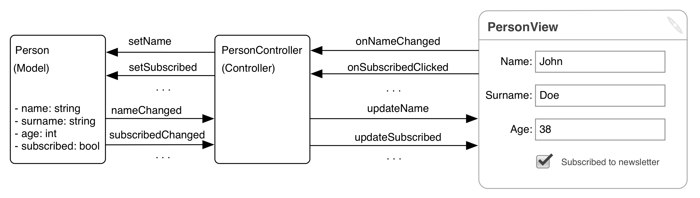
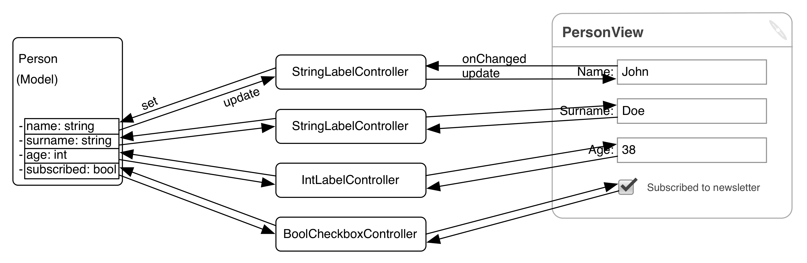
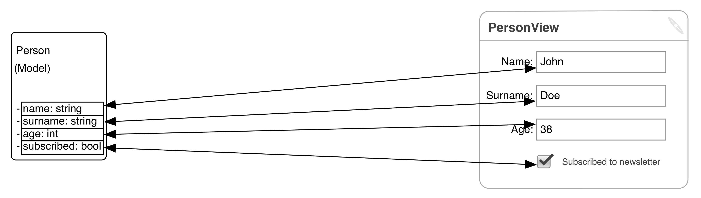

Model View Controller
and related patterns
Stefano Borini
What is Model View Controller?
Set of guidelines to develop UI applications.
Generic term. Many variations! Some large, some small.
- Reenskaug MVC
- Model View Viewmodel
- Document View
- Model View Presenter
|
- Model View Adapter
- Model Gui Mediator
- Taligent MVP
- Dolphin MVP
|
And so on...
Gives a vocabulary of terms to understand each other
Teaches us not what to do, but mostly what NOT to do
Variations: what are the differences?
- Who does what?
- Semantic level of concepts (has it visual concern or not)?
- Who are the protagonists, and how are they called?
- Is the framework providing something for free or not?
When you pick a framework, the MVC design has been chosen for you.
Don't fight it. Extend it. Simplify it.
Structure of a UI application
Three ancillary roles
- Command
- Service
- Input Output (I/O)
Roles, not classes
One class can take multiple roles (rare for some cases)
One role can be taken by multiple classes (layer)
Model
- Contains state and business logic of your application
- Notifies observers when changes happen (what protocol?)
- MUST NOT contain any UI elements/dependencies*
*MAY contain "semantically UI" concepts: Viewmodel in MVVM
An application should be functional with no UI components involved
View
- A user interface to the Model
- An observer of the Model
- Visually renders the Model state (directly or through adaptation)
- Receives user input (mouse clicks, keyboard)
- MUST NOT contain any application state
Not to be confused with...
- Widget
- A visual element of interaction that has no Model synchronisation capabilities.
UI programming: exercise in data synchronization between Models and Views
Controller
- Acts on behalf of the View to modify the Model through its API.
- Had stronger responsibilities in the past. Less today.
- Still very central in backend web programming.
Not to be confused with...
- Control
- Another term for Widget.
Command
- Encapsulates and bundles change operations to Model
- Basically, a "smart" function to act on the Model
Differences with Controller
- Controller is permanent. Command is ephemeral.
- Controller "understands" the View. Command does not.
- Controller translates. Command executes.
Service
- Provides functionality to access and synchronize against non-local state
- Used by Model, Controller and Command. Never by View.
Typical Examples
Access to database, Docker, svn, git,
JSON serialization, REST client, process management.
Input Output (I/O)
- File storage and permanence of state.
- File deprecation and upgrading.
- Import and export to foreign file formats.
Typical Example
Write and read configuration settings.
Write and read Model data (Save as...)
Export as other formats.
I/O Protips
File formats are important. You must keep supporting them.
- Don't use pickle.
- Low level format + high level format. Choose one, specify the other.
- Choose well your low level format.
- Version your files (e.g. version 1, 2, 3) from day one.
- Change version only when breaking backward compatibility
- Always add to the format to preserve backward compatibility
- Make old parsers ignore unknown entries (but see PNG)
- Make new parsers provide defaults for missing new keys.
- Upgrade on read. Don't keep old Model around.
Side note on Qt
- Qt is an application framework... kinda
- It is a widget set with some application framework capabilities bolted on.
- Poor model-view/data binding capabilities.
- A modern framework deals with boilerplate effectively:
- Basic application organization via high level concepts
- Declarative data binding
- Easy layouting
- Undo/Redo system
- Plugin/extension system
- Lookup and handling of resources (icons/images/data)
- Save/restore configuration
- Uses a declarative or "fill the spaces" (Hollywood) approach
A good Desktop UI application framework for python does not really exist
Patterns: Coarse grained MVC
Connects View and Model via a complex Controller.

Poor reusability
Patterns: Fine grained MVC
Connects SubViews and Model through simple synchronising Controllers.
Controllers connect one Model property to one View widget.

Greater reusability, but simple
Patterns: Data Binding
Fine grained MVC minus boilerplate (courtesy of framework).
Generally declarative binding between one UI element and one Model entry.
Adapters can convert data in transit.

Data binding synchronization degrees of freedom
Directionality
- One way
- propagate Model changes to View. Useful for read only Views.
- One way source
- propagate View changes to Model. Useful for Models that tend to reformat.
- Two ways
- Model to View and View to Model.
Responsiveness
- Immediate
- synchronization at every mouse/keyboard action.
- Delayed
- synchronization at focus out/close.
Pattern: Data Dialog
Retrieve information from the user via a Modal* dialog.
*Window requiring exclusive user attention until it's closed with Ok or Cancel. Blocks any other interaction.
- Copy the Model
- Exec the Modal dialog, passing the copy of the Model
- On Cancel, throw away the copy. Close the dialog
- On OK, merge modified copy of the Model with the current Model.
- Don't replace, might ruin data binding.
- Merge as atomic operation for data binding.
- If not possible, be aware of the consequences.
Gotcha: Lapsed listener
- Observer listen for changes on a Model.
- Goes out of scope without unsubscribing.
- Not collected: notification connection prevents it.
- Still receiving notifications!
- Notifications may trigger unwanted behavior.
Qt Gotcha: deleteLater
- deleteLater schedules a widget for deletion.
- Note: deletes the C++ object!
- Python object wrapper may still be alive...
- ... and referring to freed memory!
- Crash!
The event loop and the main thread
UI programming is fundamentally event driven.
One thread (main thread) executes the event loop:
- waits for events (button clicks, keyboard button presses, timers...)
- dispatches the events to the appropriate entities, synchronously.
- perform all the operations consequential of the dispatching.
- next loop iteration begins. Thread goes back to wait status.
You have 200 msec per iteration, or application will feel frozen/sluggish
If your operation takes longer, it must not be performed by the main thread
Multithreading and Threads
- Threads are good at waiting, not at doing (especially in python)
- Hard to do well. Use futures and callbacks to encapsulate boilerplate
- Hard to manage. Use a thread pool
- Cannot be canceled once running (flag checking...)
Multithreading and UI
- Secondary threads CANNOT call UI stuff. You have to post an event into the event queue.
- Qt helps you with thread affinity and signal/slots. But be careful.
- What if you have to wait for a reply? async programming.
Multithreading and python
- Don't forget your basic locking rituals.
- Minimise shared state. Use queue.Queue, threading.Event.
- Set secondary threads as daemons.
- Don't rely on atomicity of basic types (some ops are atomic, but don't rely on it)
- When in doubt, RLock
- Exceptions and GC from secondary threads.
Patterns in secondary thread/process management.
- Enqueue
- Add new operation into a queue. Let the consumer thread go through the queue
- Debounce
- Let running thread to end. Discard any secondary request
- Replace
- Let running thread to end. Replace waiting request with latest one